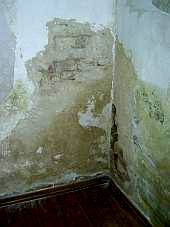
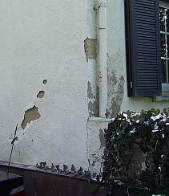
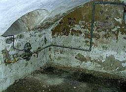
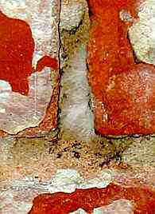

2. Kondensation
Murfundamentet strækker sig ned i den kolde jord. Ved denne sker dagligt en kondensering specielt i sommerhalvåret, hvor der er stor luftfugtighed med kondensvand. Det skal selvfølgelig ses i sammenhæng med rumluften i den kølige ydermur. Hvad skal en horisontalisolering gøre mod kondenseret vand?
Virksomme modforanstaltninger:
- Rumhylster-temperering (alternativt varmesystem,
som gør at temperaturen på vandoverfladen overfor den omgivende
luft bliver forhøjet og dermed undgår kondens.
- Vindue uden isoleringsglas eller gummifortætning som tvangskondensflade
(aflaster indervæggen fra fugtkondensation, undgår sikkert skimmelvækst)
- Rumluftaffugter (godt egnet til fugtige kælderrum)
- Pudsfornyelse med offerporet og kapillaraktiv mørtel og anstrygning
(ikke syntetisk tilslag). Disse kan virke godt mod høj luftfugtighed
og når luftfugtigheden er lav senere så tørrer de hurtigt igen.

3. Regnvanding
Tagudhænget beskytter sokkelen for lidt mod direkte og sprøjtende vand. Gennem utætte render og grundledninger, (en nødvendighed ved omlægning af utilstrækkeligt tætte byggeudgravnings opfyldninger(standardhåndværk!) trænger trykkende vand gennem væggen og ind i kælder eller fundament. Også gulvbelagte steder udendørs suger også gerne masser af salt og vand. Hvad hjælper så en horisontalisolering herimod?
Her er det den håndværksmæssige indsigt i de gamle huse som efterspørges, om det er muligt at finde bestandigheds- og konstruktionsløsninger. Også med en fra bunden afskilt mørtel efter historisk recept. Udført af fagkyndige, som bringer den varige løsning, på trods af alle mislykkede forsøg med påstået "fredningspuds". Problemer som strøgsaltsbelastning og sprøjtevand ved ringe tagudhæng, koncentreret vandsamlinger ved sokkel ved vandafvisende facader osv. bliver selvfølgelig udenfor.
Opstigende Fugt?

Nej -
Forstoppelse i nedløbsrør!
Til afslutning:
Opstigende fugt, et fænomen der ofte bliver påstået i faglitteratur og i byggeinteresserede kredse, bliver kun med gældende laboratorformler (af Hagen-Poiseulle, Grün, Mayer/Wittmann) for enkelte bygningsdele "beregnelig" og bliver på bygværket aldrig sådant bevist. En mursten med kapillarerne fuldt suget i laboratoriet eller jordnære mur-gennem-fugtet i rige tal eller inden eller foroven aftagende salt- og fugtighedsindhold er ikke noget bevis for opstigende fugt i historisk murværk.
Ikke hussvamp i kælder:
 .
.

Ikke skimmel i orgel

Videnskabeligt pålidelige praksisundersøgelser beviser at indflydelse fra salt og kondensbelastningen er den hovedsaglige grund for våde sokler og murværk og for skimmel i hus. Injektionsmaterialerne for horisontalisoleringen er i fagverdenen alligevel stærkt omstridt. Linjer i fugtige og forsaltede væge trænger ikke tilfældigt ind (jævnfør Venzmer (Hrsg.): Bautenschutzmittel, Verlag für Bauwesen, Berlin 1997) og tilfører de mest til ekstra skadesalte, som i alle tilfælde er meningsløse byggeødelæggelser.
Bygningen bliver gennem den efterfølgende horisontalisolering tilført store skader: afskåret tømmer, borehuller og injektioner med tvivlsomme kemikalier. Dette gør byggeherrens pung og statslige renoverings fonde tomme og forhindrer finansieringen af en fornuftig istandsættelse. Fordelene ved isoleringen tilfalder i den grad kun byggestofproducenten og leverandøren, ligesom den sagkyndige, publicisten og planlæggeren - handel med frygt. Og: midlerne tilfalder den byggesagkyndige i stat og kirke som med ukritisk tørlægningsillusion, har fået betroet skattekisten som nu er tom - med hvilke konsekvenser? Altid yderligere med underslæb på 0-mindstepris-plænlægnings byggegæld - eller?
Også uden den efterfølgende horisontalisolering er den fugtige mur økonomisk og teknisk godt istandsat. Tilbage til de arkitektfaglige traditioner og den sunde fornuft!